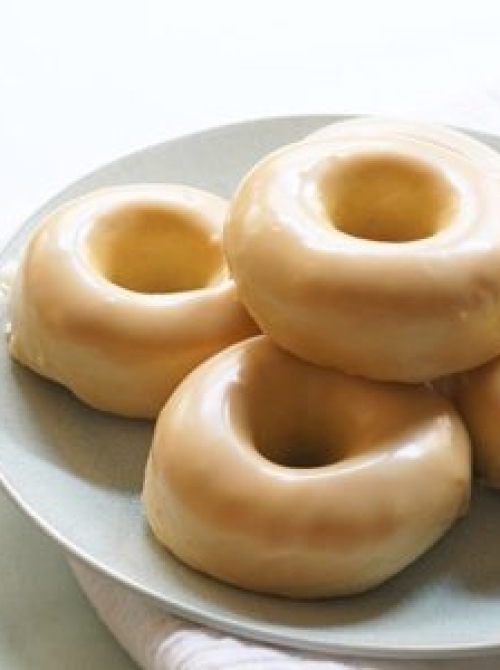

Doughnuts

This is a great doughnut, it's light, fluffy and delicious.
Ingredients
Dough:
- 1-1/3 cup milk
- 2-1/2 tsp (1 pck) instant yeast
- 2 tbsp butter
- 2/3 cup granulated sugar
- 2 large eggs
- 5 cups all purpose flour
- 2 tsp vainilla extract
Glaze:
- 4 tsp butter
- 1 cup powdered sugar
Instructions
- Warm milk with 1 tbsp sugar, add yeast, and mix
- Mix with a dough hook with the rest of sugar, melted butter, eggs, flour and vainilla
- Knead until the dough is soft and smooth buy still slightly sticky
- Let dough rise until it doubles
- Roll the dough into a half inch thickness sheet
- Cut into doughnuts
- Line them up in a baking tray and rise for 45 min
- Bake at 350°F for 10 min
- Let them cool for 10 min
- Mix the glaze ingredients until smooth
- Glaze the doughnuts and let the dry
- Enjoy!
HOMEPAGE